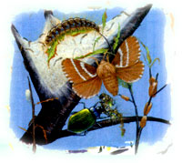
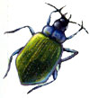

These big bugs were obvious inside our garden many years before we had children, but the youngsters, being close to the ground, forced us to slow down and pay attention to them. The bugs were given names, professions and lifestyles (lucky for them, they were too small to dress in doll clothes), and their habits were studied closely, too.
The tremendous numbers of small insect eggs laid in temperate and tropical habitats make it imperative that a number of slightly larger creatures be available as diners, to help control this mania for multiplication. The ground beetles, or Carabidae, are just one of the largely predacious insect families designed for the job. They number at least 2,500 species in North America, and both adults and larvae are predacious. A majority are dark in color, and some have a distinctive shiny or metallic sheen.
One of the beauties of diversity lies in the seemingly redundant layers of organisms that almost, but don't quite, duplicate one another's purpose. Within the ground beetle family, a few eat seeds, a few concentrate near water, and some readily climb trees and consume arboreal insects, including aphids and forest tent caterpillars. One species is commonly found in beaver lodges!
But most are terrestrial predators. Of those, some specialize in eating a certain type of insect adult or larvae, but most are not what you'd call discriminating diners. Most of the carabids are nocturnal, and they can move quickly on the ground. Many are big relative to their wing size, which makes them poor flyers; you'll nearly always see them walking.
The head is noticeably smaller than the thorax, too, with very thin, threadlike antennae. This beetle's other noticeable feature is a set of parallel lines on the front wings that serve as the cover for the hind (flight) wings and abdomen. If you look closely, you will see on some species, these lines are actually rows of small dots or pits. Also, some species can emit a strong, foul odor if handled-we found this out firsthand.
Many garden pests are carabid food: cutworms, codling moth larvae, tent caterpillars, slugs, snails and cankerworms to name a few. Some beneficial insects will fall prey to them, too.
If you are using mulches in your garden, you are providing good carabid habitat. Leaf litter and such are good places for ground beetles to look for food and to hide themselves from their own predators. Many hibernate in litter as well. Most carabids pass through one full generation in a year, but the process takes longer in colder climates. If you are in need of a half-hour dose of sunlight, consider finding a friendly ground beetle and saying 'hello.'
- John Stuart
Mother Earth News
|
 Some ground beetles climb trees to feed on pest insects, including the tent caterpillar, shown here. |
 |
|